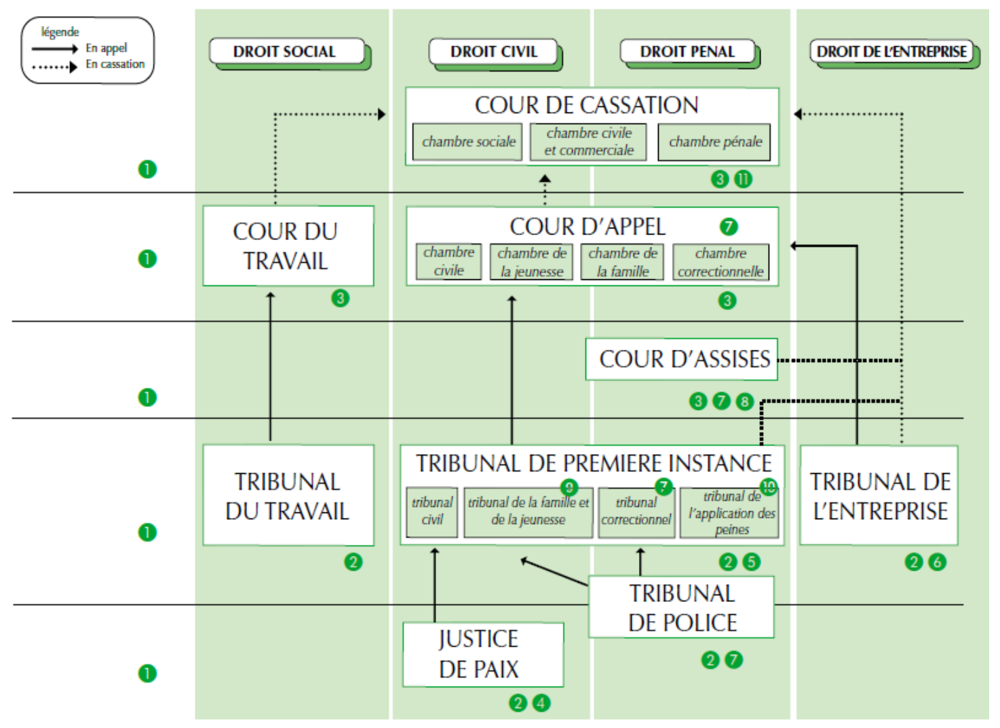

Les pouvoirs en Belgique
- Legislatif: Decide les lois
- Executif : Execute les lois regis par le legislatif
- Judiciaire : Fait respecter les lois et sanctionne
Dame Justitia
- Le bandeau qui represente l'impartialite
- la balance qui note l'equilibre du jugement
- l'epee qui represente la sanction
- le serpent qui represente le vis
Le systeme accusatoire et requisitoire
- Le systeme accusatoire
Le procès y est conçu comme un affrontement contradictoire et public entre l’accusation et la défense. Si chacune des parties se trouve à égalité avec son adversaire, chacune doit également prouver les faits au soutien de sa cause.
- Le systeme requisitoire
Le modèle inquisitoire accentue au contraire la différence entre justice pénale et justice civile. Il privilégie pour la première la position de surplomb d’un juge représentant l’intérêt général et chargé de diriger l’enquête afin de faire triompher la vérité.
Les sources de la procedure penale
- Les conventions internationales
- La legislations belge
- Constitution
- Lois
- Decrets et ordonnances
- Reglements provinciaux et communaux
- jurisprudence
- Principes generaux de droit
Les acteurs du proces penal
- Le suspect : suspecte d'avoir commis une infractions sans certitude
- L'inculpe : Personne qui est mise en accusation
- Le prevenu : Convoque devant le tribunal de police ou correctionnel
- l'accuse : convoque devant la court d'assise
- Le condamne
- La victime ( etudier tableau apge 12 et 13 )
- Declaration personne lesse
- Constitution partie civile
- Avocat
- Assure la defense des parties au proces
- Services de police
- Mission de police administrative
- Mission de police judicaire
tableau page 15
Competence police judicaire
Acteurs du proces penal
- Le ministere public
- Initie la procedure penale
- Les juridictions d'instruction
- Chambre du conseil
- Chambre des mise en accusation
- Le juge d'instruction
- Dirige l'instruction
- Le juge penal
- Statue sur le fond de l'affaire
Le deroulement de la procedure penale


Caracteristiques de la procedure penale
- Secret de l'enquete
- Publicite des audiences et du prononce des jugements ( Expliquer le 8 clos )
- Caractere contradictoire de l'audience
- Caractere oral de l'audience
- Chaque jugement ou arret doit etre motive
Extinction de l'action publique
- Supression de la loi penale
- Deces du suspect , de l'accuse ou du prevenu
- Paiement d'une certaine somme d'argent
- L'autorite de chose jugee
- L'amnistie
- la prescription de l'action publique
Prescription de l'action publique
la justice de paix
- Juridiction Civile
- Juge de paix statue sur les differents litiges entre citoyens
- Le juge de paix connait de toute demandes dont le montent n'excede pas 5000euros
Tribunal de police
- Juridiction penale
- Le tribunal de police est principalement competent pour juger les contraventions et les infractions de roulage
Tribunal du travail
Tribunal de premiere instances
- Chambre civile
Contestations de 5000+ euros
Juridiction d'appel affaires juge de paix et polices
- Chambre correctionelle
- TAP
- Tribunal Jeunesse
- Tribunal de la famille
Cour d'appel
Tribunal de l'entreprise
cour d'assise
- Competente pour les crimes
- Composee de trois juges progessionnels
- Composee d'un jury de 12 jure
Cour de Cassation
Plus haute juridiction du pays
Juge de la legalite des decision judicaires
Veille a l'unification de la jurisprudence et a l'evolution du droit
- Chambre sociale
- Chambre civile et commerciale
- Chambre Penale
Les voies de recours Schema page 54
- L'opposition
Voie de recours contre la decision d'un jugement rendu par defaut
Renvoie l'affaire devant la meme juridiction que celle qui a rendu le jugement
Opposition sur opposition ne vaut (pas possible)
- L'appel
Jugement rendu par une juridiction inferieure reexamine par unbe instance superieur
Un appel est forme contre une decision prise par le premier degre de juridiction
il faut un interet
L'instance d'appel peut decider de confirmer le jugement
- La pourvoi de cassation
Ne statue pas sur le fond de l'affaire mais sur la legalite du jugeent rendu et sur la stricte observance de la procedure
Si le recours en cassation est accueilli, la cour de cassation casse le jugement/l'arret qui lui a ete soumis et renvoiel'affaires devant une autre juridiction du meme degre que celle qui a connu de l'affaire avant le pourvoi en cassation